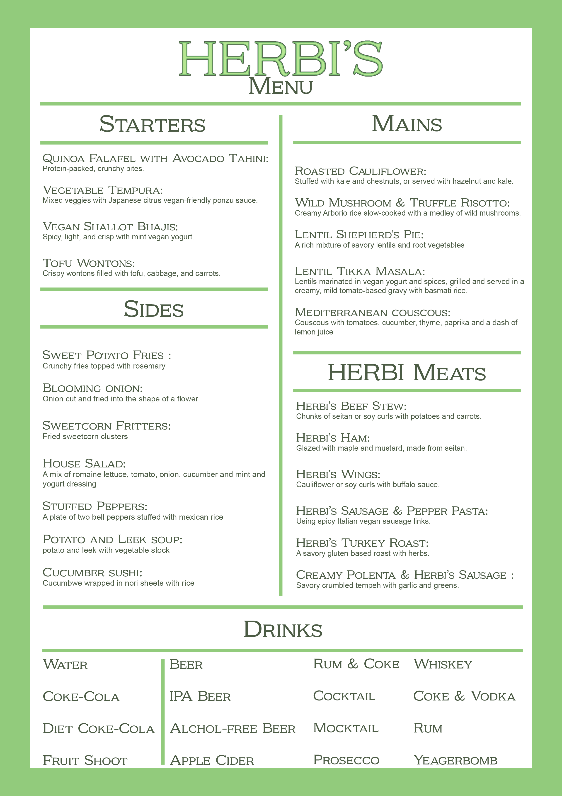

Our dishes
Our dishes are crafted to celebrate the richness of plant-based cuisine. Each plate combines fresh seasonal ingredients with bold Mediterranean flavours, creating meals that are both nourishing and beautifully presented.

At Herbi's, we believe vegan food should be exciting, colourful, and satisfying for everyone. From hearty mains to light seasonal creations, every dish is prepared with care by our kitchen team to highlight natural flavours and quality ingredients.
Whether you are a long-time vegan or simply curious about plant-based cooking, our menu invites you to explore new tastes and enjoy a relaxed dining experience in the heart of Bristol.
Our Menu

Delivery
At Herbi’s, we make it easy to enjoy delicious plant-based food from the comfort of your home. Our delivery service across Bristol is designed to be quick, reliable, and eco-conscious, ensuring your meals arrive fresh and full of flavour. Whether you’re craving a nourishing lunch or a cosy dinner, we’ve got you covered.

We take pride in using sustainable packaging that keeps your food warm while reducing environmental impact. Every order is carefully prepared and packed by our team, so it arrives just as vibrant and satisfying as it would in our restaurant. From hearty bowls to indulgent vegan treats, quality is never compromised.
Ordering from Herbi’s is simple and convenient, making it perfect for busy days or relaxed evenings in. With flexible delivery times and a menu crafted to travel well, you can enjoy our signature dishes wherever you are in Bristol. Great vegan food, delivered straight to your door.